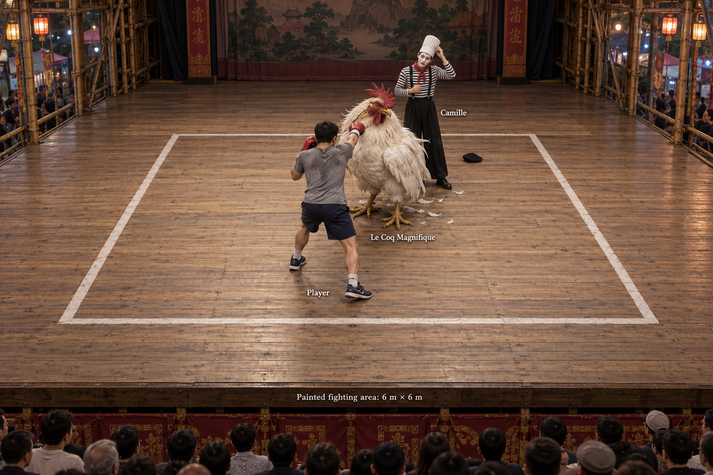

Decision-Making Scenario
The Mime
Hau Wong Temple bamboo theatre, Tung Chung. Round three of three.
| Objective | Win the bout. |
|---|---|
| Opponent | Camille “The Mime” Durand |
| Format | A “stage drama”: three rounds of three minutes, scored on points |
| Arena | 6 m × 6 m painted square on a wooden stage, no ropes |
| Clock | Final round, about 30 seconds remaining |
| Score | Unknown; you believe it is even |
1.Situation
You are a boxer fighting Camille “The Mime” Durand at the Hau Wong Temple bamboo theatre in Tung Chung. The announcer introduced the contest as a “stage drama”: three rounds of three minutes, scored on points. The punches and impacts have been real. Your objective is to win the bout.
2.Terrain
The fighting area is a six-metre square painted onto a wooden stage. There are no ropes; beyond the paint, a generous margin of boards separates the fighting area from the stage edge. Spectators face the stage.
3.Your Assets
Your strongest assets are technique and punching power. Your punches can move Camille when they connect, and you have the coordination to deliver accurate combinations. However, Camille’s theatrical movements conceal quick reactions. You cannot count on landing simply by throwing harder or throwing more.
4.Rounds One and Two
For this exercise, the earlier rounds have unfolded as follows:
- The stairs: Camille climbed two metres into the air on invisible steps, then charged downhill at you, shoulder first. You braced behind your gloves. The collision sent both of you reeling, but you recovered without injury.
- The wall: Camille pressed their palms against empty air. Your testing jab met solid resistance, but it yielded under pressure. Repeated jabs and crosses drove Camille backwards; their arms trembled as they maintained the wall.
- The rope: Camille hauled on an invisible rope, pulling you forward by the waist. You went with the pull and rushed into punching range. Your flurry caught them open, although you arrived slightly off balance.
- The wind: Camille leaned into an imaginary gale. Gusts struck you hard enough to force a step backwards. You turned sideways, planted your rear foot and held your guard until the wind subsided.
At the end of round two, you were breathing hard but unhurt. Camille was labouring for breath, their white face paint streaked with sweat.
5.Round Three
During the interval, spectators began chanting: “Le Coq! Le Coq! Le Coq Magnifique!”
The final round has now begun. You immediately pressed Camille with combinations. They parried, slipped and rolled away: more than a dozen punches produced only one glancing hit on their shoulder. You paused to catch your breath.
Camille sprinted towards the far edge of the stage. You pursued. They threw down their beret, pulled a pleated chef’s hat from their trousers and put it on.
A flash blinded you.
As your vision cleared, an enormous chicken stood between you and Camille: almost five feet tall, white feathers, a scarlet comb and a blunt golden beak. Camille stood behind it with their hands spread above their head.
The bird flapped into the air. Its wingbeats pushed you back a step. Loose feathers faded as they touched the floorboards. It landed and squawked.
You tested it with a jab. Your glove connected. The chicken jerked its head back and pecked at your glove. Behind it, Camille adjusted their chef’s hat, lips pressed together.
6.Current Situation
This is the situation now:

You have felt the bird’s physical resistance and the force of its wings. You have seen only one peck. You do not yet know how independently it acts, how much punishment it can withstand, or what sustains it. Your opening barrage has cost you breath. About 30 seconds remain in the final round. You do not know the precise score, but you believe it is even.
Requirement
Describe your next five to ten seconds. State your movement, intended target and first action. What will you watch for, and what observation would make you change your approach?